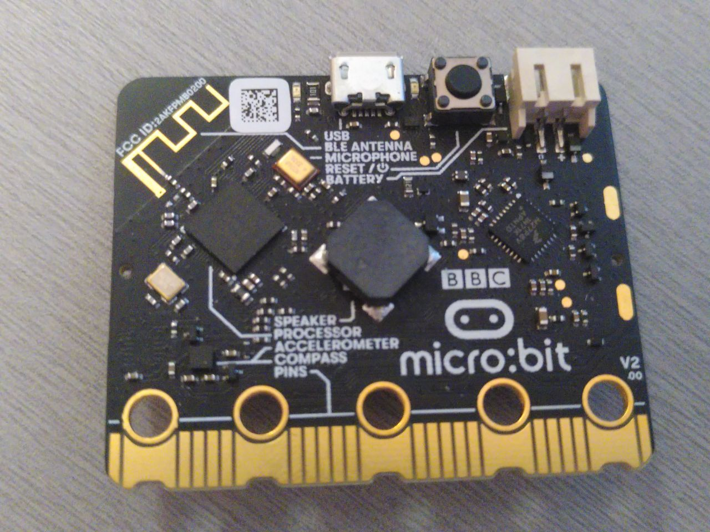
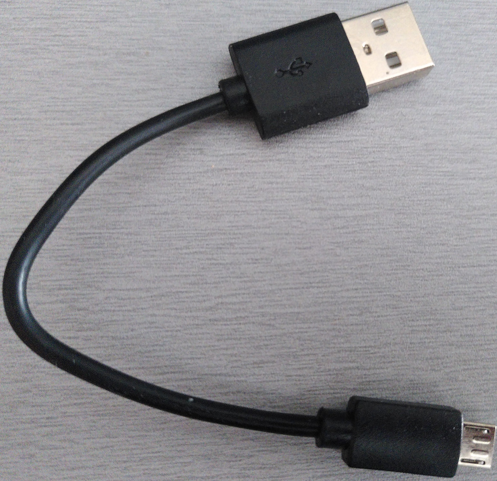

Yêu cầu phần cứng/kiến thức
Yêu cầu về kiến thức
Yêu cầu kiến thức chính để đọc cuốn sách này là biết một chút Rust. Bạn cần hiểu về generics, traits, closures, và các idiom Rust hiện đại.
Yêu cầu phần cứng
Ngoài ra, để theo dõi tài liệu này, bạn cần có các phần cứng sau:
-
Một board micro:bit v2 (MB2). Cuốn sách này được viết cho phiên bản V2.00; mọi thứ sẽ hoạt động tốt với bất kỳ board V2 nào.

-
Một cáp micro-B USB. Cáp này cần để cấp nguồn cho board micro:bit khi không dùng pin, và để giao tiếp với nó. Hãy đảm bảo cáp hỗ trợ truyền dữ liệu vì một số cáp chỉ hỗ trợ sạc thiết bị.

Câu hỏi thường gặp
Ủa, tại sao tôi lại cần đúng phần cứng này?
Nó giúp cuộc sống của tôi và của bạn dễ dàng hơn nhiều. Tài liệu dễ tiếp cận hơn rất, rất nhiều nếu chúng ta không phải lo lắng về sự khác biệt giữa các loại phần cứng. Hãy tin tôi điều này.
Tôi có thể theo dõi tài liệu này với một board phát triển khác không?
Có thể? Điều đó phụ thuộc chủ yếu vào hai thứ: kinh nghiệm trước đây của bạn với microcontroller và/hoặc liệu đã có sẵn một crate cấp cao, như nrf52-hal, cho board phát triển của bạn ở đâu đó chưa. Bạn có thể tìm kiếm trong danh sách HAL của Awesome Embedded Rust cho microcontroller của mình, nếu bạn định dùng một loại khác.
Với một board phát triển khác, cuốn sách này sẽ mất đi hầu hết hoặc toàn bộ tính thân thiện với người mới và tính "dễ theo dõi", theo quan điểm của tôi.
Nếu bạn có một board phát triển khác và bạn không tự coi mình là người mới hoàn toàn, bạn có thể tìm kiếm Board Support crates cho board của mình, hoặc cân nhắc dùng template Cortex-M quickstart.